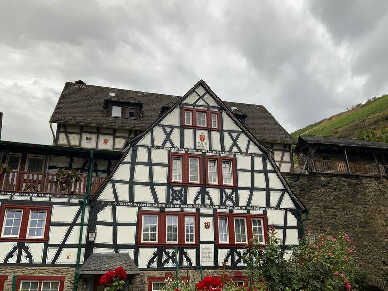
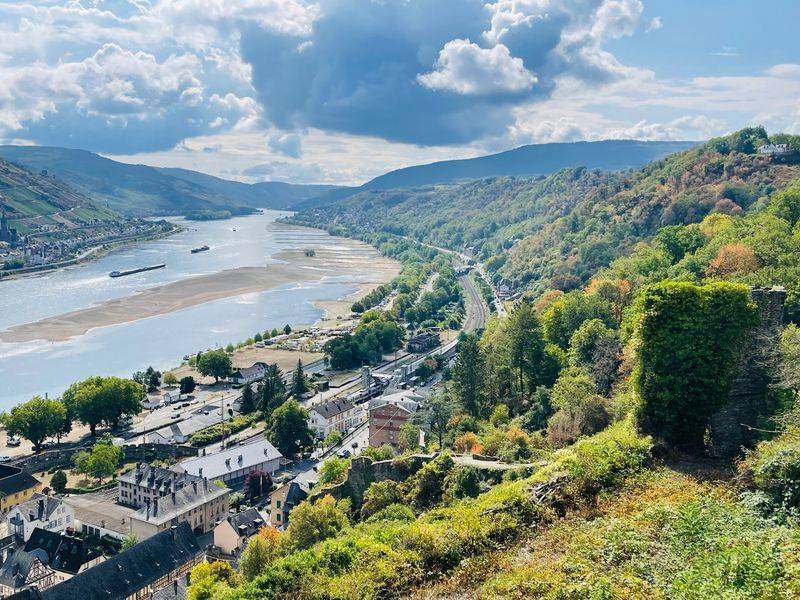
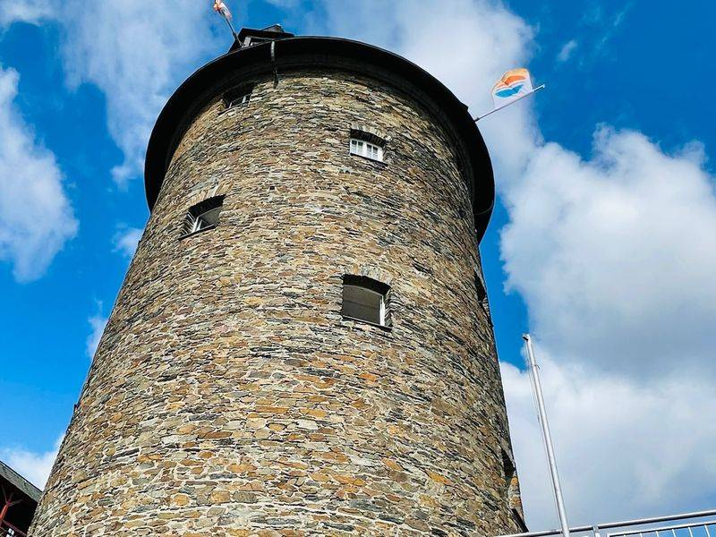
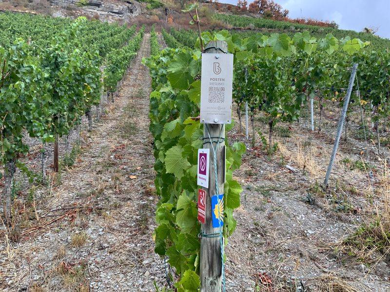
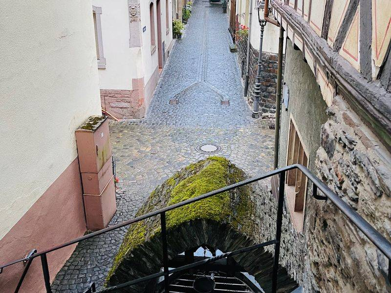
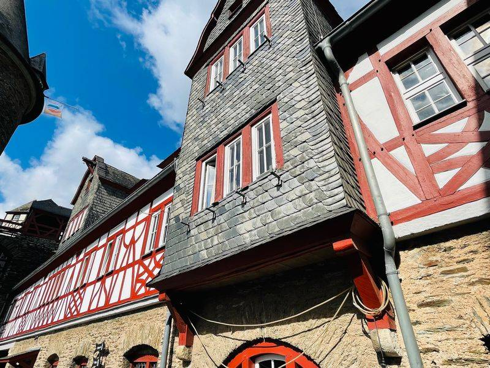
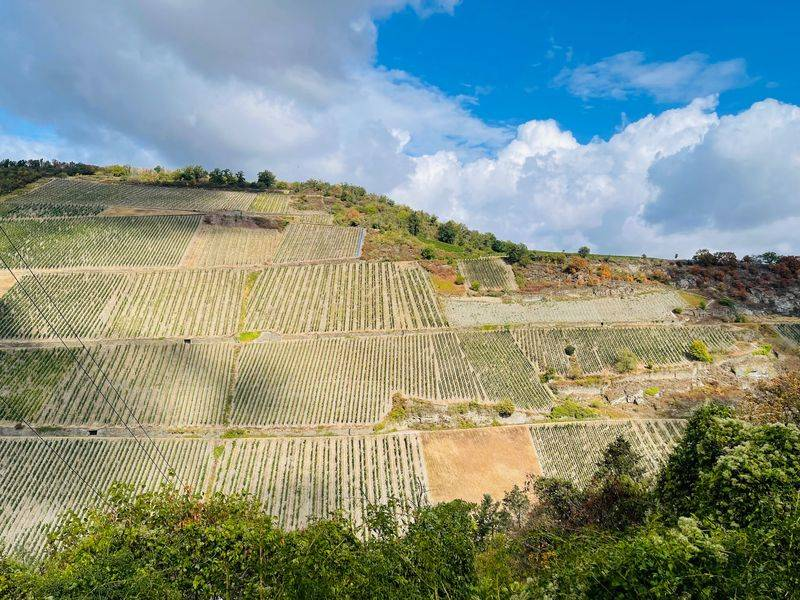
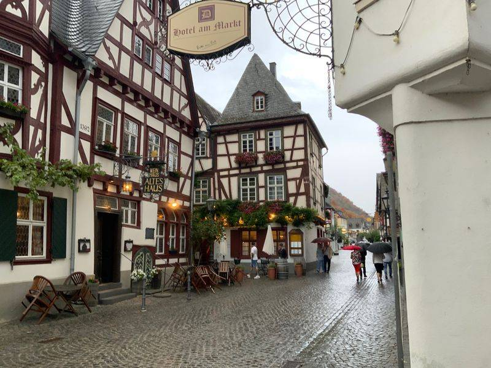
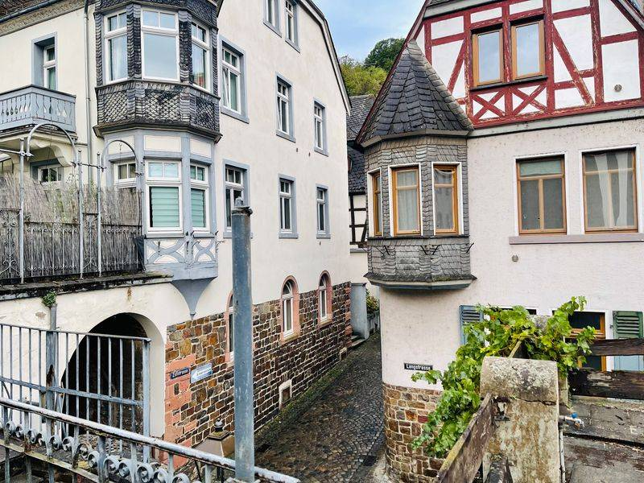

Bacharach am MittelrheinBacharach, en el Rin Medio
Wein, Türme und Rheinromantik Vino, torres y romanticismo a orillas del Rin
Fachwerkgassen, eine fast vollständig erhaltene Stadtmauer und Weinberge bis an die Häuser: Bacharach ist der Inbegriff der Rheinromantik – und ein wunderbarer Tagesausflug ab Düsseldorf oder Neuss.
Callejuelas con casas de entramado, una muralla casi intacta y viñedos que llegan hasta las casas: Bacharach es la esencia del Rin romántico – y una excursión de un día perfecta desde Düsseldorf o Neuss.


Wo die Loreley zu Hause war
Donde vivía la Loreley
Bacharach liegt mitten im UNESCO-Welterbe Oberes Mittelrheintal. Schon die Dichter der Romantik – Victor Hugo, Heinrich Heine, Clemens Brentano – waren von dem kleinen Weinort verzaubert. Brentano ließ hier seine Zauberin „Lore Lay“ wohnen; aus ihr wurde später die berühmte Loreley.
Bacharach se encuentra en pleno corazón del Valle del Alto Rin Medio, Patrimonio Mundial de la UNESCO. Los poetas del Romanticismo – Victor Hugo, Heinrich Heine, Clemens Brentano – quedaron fascinados por este pequeño pueblo vinícola. Brentano situó aquí a su hechicera «Lore Lay», que más tarde se convertiría en la famosa Loreley.
Auf unserem Rundgang folgen wir der Stadtmauer mit ihren Türmen, schlendern durch Gassen voller Fachwerk und schauen hinauf zur Burg Stahleck. Wir erzählen, warum die Ruine der Wernerkapelle so berühmt ist und wie der Wein die kleine Stadt einst reich gemacht hat.
En nuestro recorrido seguimos la muralla con sus torres, paseamos por callejuelas llenas de casas de entramado y contemplamos el castillo de Stahleck. Le contamos por qué las ruinas de la capilla de Werner son tan famosas y cómo el vino hizo rica a esta pequeña ciudad.
Stationen der Führung
Paradas del recorrido
- Stadtmauer & Türme: Ein großer Teil der mittelalterlichen Befestigung ist erhalten – vom Mauerweg öffnen sich herrliche Blicke über Dächer und Rhein.
- Fachwerk & Schiefer: Rund um den Marktplatz stehen einige der schönsten Fachwerkhäuser am Rhein.
- Peterskirche & Wernerkapelle: die spätromanische Kirche und die gotische Kapellenruine – Wahrzeichen der Stadt.
- Burg Stahleck: Die Burg aus dem 12. Jahrhundert thront über den Dächern; heute ist sie eine Jugendherberge.
- Weinbau: Riesling aus steilen Schieferlagen – seit Jahrhunderten prägt der Wein Landschaft und Leben.
- Muralla y torres: Gran parte de la fortificación medieval se conserva – desde el camino de ronda se disfrutan vistas magníficas sobre los tejados y el Rin.
- Entramado y pizarra: En torno a la plaza del mercado se encuentran algunas de las casas de entramado más bonitas del Rin.
- Iglesia de San Pedro y capilla de Werner: la iglesia románica tardía y las ruinas góticas de la capilla – símbolos de la ciudad.
- Castillo de Stahleck: El castillo del siglo XII domina el pueblo desde lo alto; hoy es un albergue juvenil.
- Viticultura: Riesling de empinadas laderas de pizarra – desde hace siglos el vino marca el paisaje y la vida.
Ihr Tag am Rhein
Su día en el Rin
-
Tagesausflug ab Düsseldorf oder Neuss
Excursión de un día desde Düsseldorf o Neuss
Wir planen den Tag mit Ihnen – von der Abfahrt bis zur Rückkehr am Abend.
Planificamos el día con usted – desde la salida hasta el regreso por la tarde.
-
Mit dem Schiff durchs Welterbe
En barco por el Patrimonio Mundial
Auf Wunsch verbinden wir die Führung mit einer Schifffahrt – vorbei an Burgen, Weinbergen und dem Loreley-Felsen.
Si lo desea, combinamos la visita con un paseo en barco – entre castillos, viñedos y la roca de la Loreley.
-
Mittagessen nach Ihrem Geschmack
Almuerzo a su gusto
Gerne gehört eine gemütliche Mittagspause mit regionaler Küche zum Programm – ganz wie es Ihnen gefällt.
Con mucho gusto incluimos una agradable pausa para comer con cocina regional – tal y como usted prefiera.
-
Auf Deutsch oder Spanisch
En alemán o en español
Diese Führung bieten wir in beiden Sprachen an.
Ofrecemos esta visita guiada en ambos idiomas.
Eindrücke aus Bacharach
Impresiones de Bacharach









Interesse an dieser Tour?
¿Le interesa esta excursión?
Stellen Sie unverbindlich Ihre Anfrage für „Bacharach“.
Envíenos su solicitud sin compromiso – puede escribirnos en español.